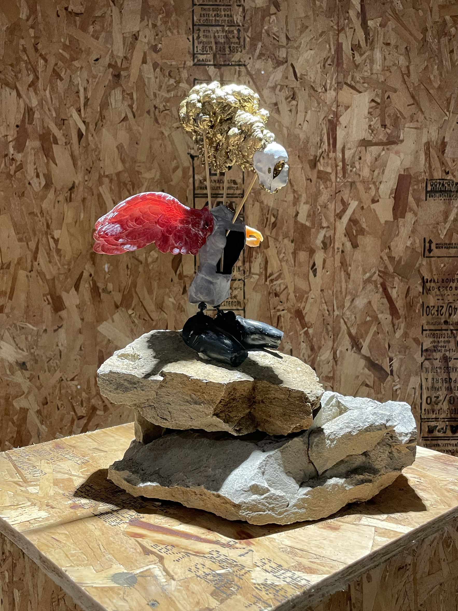
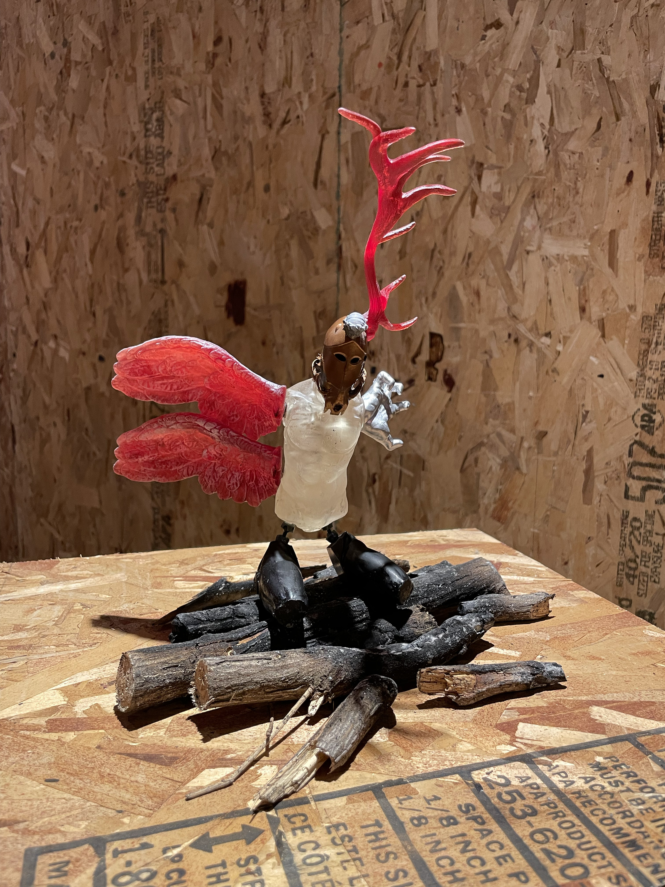

This Acre of Little Wounds, 2023
3D printed, articulated, modular sculptures
The Acreage Dolls are modular, articulated 3D printed sculptures - assemblages of found and modified digital objects. Their individual parts create a mythology of life’s inevitable wounds and the subsequent adaptation to those wounds. Despite their stillness, the Dolls are action figures. Their cultivated parts and contexts speak to what’s been lived through, what’s survived, and, as a result, what choices are now available to each Doll moving forward. They are illustrations of forced adaptation, acceptance, and strength born through compassionate collaboration.

